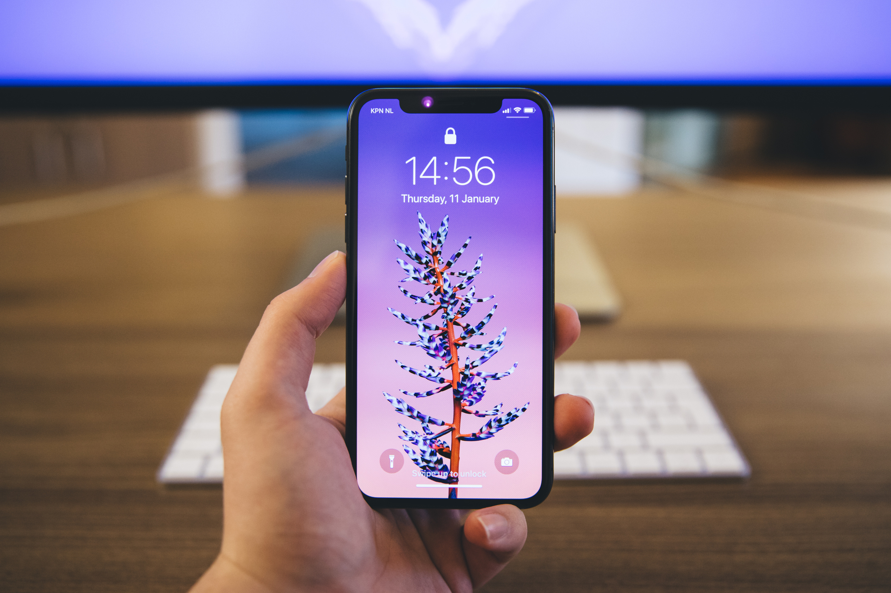

Online Fitness Coaching
Nutrizionista Online
Il tuo prossimo coach è qui. Inizia con una consulenza gratuita, poi decidi se continuare. Trasforma questa nella tua ultima dieta.

Cosa pensano i miei clienti
“Coach molto attento, disponibile e professionale. Allenamenti strutturati bene e spiegati in modo chiaro.”
Sara“Dopo anni di allenamenti fai da te ho trovato un percorso personalizzato, efficace e concreto.”
Yasin“Non una scheda copia e incolla: un vero percorso sostenibile, con risposte presenti e precise.”
LorenzoCome funziona il percorso?
Consulenza
Parliamo di obiettivi, routine e difficoltà per capire il percorso più adatto a te.
Analisi
Raccolgo dati, abitudini e storico per costruire una partenza realistica.
Piano su misura
Allenamento, nutrizione e priorità pratiche vengono calibrati sui tuoi impegni.
Supporto quotidiano
Hai indicazioni semplici, feedback e contatto diretto quando hai bisogno.
Controlli
Valutiamo progressi, aderenza e criticità per aggiornare il percorso nel modo giusto.
Autonomia
Ti insegno a mantenere i risultati senza dipendere per sempre da una scheda.
Ma chi sarà il mio coach online?
Il percorso è seguito direttamente da Leonardo Santini: coaching online, allenamento personalizzato e strategie alimentari sostenibili, senza estremismi e senza piani standard.
Conosci Leonardo
Leonardo
Online Fitness Coach
Con me non sei
mai solo
Lasciarti affrontare tutto questo da solo non ha senso. Puoi scrivermi, farmi domande e ricevere correzioni durante il percorso.
Non è il solito servizio di coaching
Creo la combinazione di semplicità, metodo e supporto per ridurre ogni ostacolo lungo il percorso.
- Professionista dedicato
- Visite e controlli da dove vuoi
- Supporto continuo
- App dedicata
- Piani aggiornati nel tempo
Sì, ma quanto costa?
Coaching Base
Allenamento onlinePer chi vuole una struttura chiara e progressioni programmate.
- Allenamento su misura
- Check periodici
- Feedback tecnici essenziali
- App dedicata
Coaching Premium
Allenamento + nutrizionePer chi vuole un percorso completo, guidato e più facile da seguire.
- Tutto il Base incluso
- Nutrizione integrata
- Monitoraggio più ravvicinato
- Supporto diretto